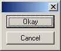
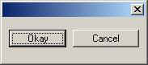
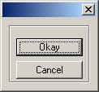
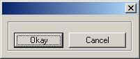
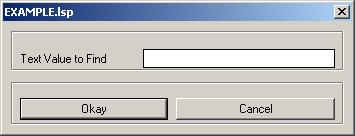

The AutoLisp Tutorial - DCL
Dialog Control Language
Getting Started
I'm not going to explain everything there is to know about Dialog Control Language. There are plenty of books on the subject. I will attempt to give you a good understanding of how DCL interacts with AutoLisp. You should be able to write your first DCL driven Autolisp program in no time. Let's get to it.
Here is the basic order for things to happen inside the AutoLisp file:
| (defun C:MyProgram()
; Define the main program (defun myFunction1() ; Define the functions you need like saveVars ;do stuff here ) (defun myFunction2() ;do stuff here ) (setq list1(list "a" "b" "c" "d")) ; Build the list if any are required (setq list2(list "1" "2" "3" "4")) (setq list3(list "x" "y" "z"))
load_dialog ;Load the DCL file
start_list
;As many list as you need
mode_tile ; Enable or disable tiles (as necessary) ;Set up as many action tiles as you need. (action_tile "accept" "(setq d
2)(myFunction1)(done_dialog)")
start_dialog ; Start the dialog box unload_dialog ; Unload the dialog box
; Do stuff if the user presses the cancel key (if (= d 1) ;do stuff here if cancel was pressed ) ; Do stuff if the user presses the accept key (if (= d 2) ;do stuff here if okay was pressed ) ) ; close the program |
We will discuss this in detail later on.
I've found the hardest thing to get a grip on is laying out the dialog box. Please take a look at the rows and columns section if you need help with laying out a dialog box. For now let's look at the basics. I'm going to throw a lot at you, but don't panic. I'll cover them a little closer later on. We will cover these items first: button, row, column, boxed_row, and boxed_column.
Okay and Cancel Buttons - The DCL code for a these buttons look like this:
: button {
\\
Define the button
key = "accept"; \\
Define the action key (This is my name assigned to this button)
label = " Okay "; \\
This is the text displayed on the button.
is_default = true; \\ Allows the
button to activate when the user presses the enter key.
}
\\
Close the button definition
: button {
\\
Define another button
key = "cancel"; \\
Define the action key. (I chose this name for the button.)
label = " Cancel "; \\ Text
displayed on the button.
is_default = false; \\ Does not allow this
key to activate when the enter key is pressed.
is_cancel = true; \\ Activate
this key when the close button [ X ] is selected.
}
\\
Close the button definition
Rows and Columns designate areas to lay your controls on. [Controls are list boxes, edit boxes, buttons, etc. ].
Here is the DCL code for a column:
: column {
}
Here is the DCL code for a row:
: row {
}
Simple right?
Here is the code for a column with two buttons:
| : column { : button { : button { } |
 Notice the buttons are stacked on top of each other. |
Here is the code for a row with two buttons:
| : row { : button { : button { } |
 Notice the buttons are side by side. |
Let's turn the above into Boxed Rows and Boxed Columns. Here is the code for a boxed_column with two buttons:
| : boxed_column { : button { : button { } |
 Notice the box around the buttons. |
Here is the code for a boxed_row with two buttons:
| : boxed_row { : button { : button { } |
 Notice the box around the buttons. |
Now we know the difference between a row and a boxed_row. We also know that controls inside a column get stacked on top of each other [ vertical ] and controls inside a row are next to each other [ horizontal ].
Important: You should never ever attempt to build a dialog box without a cancel button. Trust me. Or you can do what I did and find out for yourself.
Overview
Let's take a look at the entire code for the dialog box above, including the LSP file:
DCL FILE NAMED: DCL_TEST.DCL AUTOLISP PROGRAM NAMED: DCL_TEST.lsp
| DCL_TEST : dialog { : boxed_row { : button { : button { } } |
(defun C:DCL_TEST() (setq dcl_id (load_dialog "DCL_TEST.dcl")) (if (not (new_dialog "DCL_SAMPLE" dcl_id) ) (exit)) (action_tile "cancel" "(setq ddiag 1)(done_dialog)") (action_tile "accept" "(setq ddiag 2)(done_dialog)") (start_dialog) (unload_dialog dcl_id) (if (= ddiag 1) (princ "\n \n ...DCL_TEST Cancelled. \n ") ) (if (= ddiag 2) (alert "You pressed the OKAY button!") ) ) |
AutoLISP
Let's take a look at the AutoLisp part of this simple program.
First we defined our program:
(defun C:DCL_TEST()
The second thing was to load the DCL file from disk. Insert a path if necessary, but I always liked to use the autocad search path to find the file. Notice the dcl_id variable used. We will need this later on. This identifies the file opened.
;;;--- Put up the dialog box
(setq dcl_id (load_dialog "DCL_TEST.dcl"))
Since a DCL file can contain multiple dialog box definitions, [ I'll show you an example later on. ] we need to specify which dialog box we want to load. This is taken care of in the next statement. Notice the name matches the definition inside the DCL file.
;;;--- See if it is already loaded
(if (not (new_dialog "DCL_SAMPLE" dcl_id) ) (exit))
Next, we define our action keys. These
tell the program what to do whenever a user presses a button, selects an item in a list,
etc. Notice the two action keys. "cancel" and "accept" .
These match the keys in the DCL file. I made these names up. You can
name them whatever you want as long as it is not a name used by AutoCAD and it only
appears once in each DCL definition. You can't have two controls with the same key,
the program would get confused. So would I!!! Whenever the user presses
the cancel key, the program sets variable ddiag to 1 and closes the dialog box. Upon
pressing the Okay button, [ key = accept ], the program sets variable ddiag to 2 and
closes the dialog box. That's it. Nothing else to add except, you could have
just about anything in here, including instructions to execute a function [ I'll
demonstrate that later. ]
;;;--- If an action event occurs, do this function
(action_tile "cancel" "(setq ddiag 1)(done_dialog)")
(action_tile "accept" "(setq ddiag 2)(done_dialog)")
Finally, the big step. Everything is defined, let's display the dialog box.
;;;--- Display the dialog box
(start_dialog)
The program halts here until the dialog box is issued a "done_dialog" call. In the mean time the user is interacting with the action keys. When the user presses a button the program kills the dialog box with the unload_dialog call. Notice the dcl_id passed as a parameter. You could have more than one dialog file open at one time. So, the unload_dialog function needs to know which one to unload.
;;;--- Display the dialog box
(unload_dialog dcl_id)
Finally the dialog box is gone. What next? Find out which button the user pressed? Exactly! Remember setting the ddiag variable to either 1 or 2. We will use that now to determine which button was pressed. There is a better way to do this, I'll show you later.
;;;--- If the cancel button was pressed - display message
(if (= ddiag 1)
(princ "\n \n ...DCL_LSP Cancelled. \n ")
)
;;;--- If the "Create" button was pressed
(if (= ddiag 2)
(alert "You pressed the OKAY button!")
)
And the last step, close the autolisp program.
)
The basic DCL model
I will now give you the model I use for 98% of all dialog based programs I write. I start with this basic program and build from there. It is basically the same thing we've gone over before. I put up a dialog box. I allow the user to press buttons and manipulate data. The only difference is, when the user presses the OKAY button I save the settings in the dialog file before it closes. I do this inside the action key call with a function called saveVars. Without further ado, here's the model:
The DCL File:
EXAMPLE : dialog {
label = "EXAMPLE.lsp";
\\ Puts a label on the
dialog box
initial_focus =
"textval"; \\ Sets the initial focus
: column {
: row {
:
boxed_column {
: edit_box {
\\
The edit_box control - Something new!
key = "textval";
label = "Text Value to Find";
edit_width = 30;
value = "";
}
}
}
: row {
: boxed_row
{
: button {
key = "accept";
label = " Okay ";
is_default = true;
}
: button {
key = "cancel";
label = " Cancel ";
is_default = false;
is_cancel = true;
}
}
}
}
}
The AutoLisp File:
;;;--- EXAMPLE.lsp - Text Find
(defun saveVars()
;;;--- Save the input from the dialog box
(setq textVal (get_tile "textval"))
)
(defun C:EXAMPLE()
;;;--- Load the dcl file
(setq dcl_id (load_dialog "EXAMPLE.dcl"))
;;;--- Load the dialog definition if it is not already loaded
(if (not (new_dialog "EXAMPLE" dcl_id) ) (exit))
;;;--- If an action event occurs, do this function
(action_tile "cancel" "(setq ddiag 1)(done_dialog)")
(action_tile "accept" "(setq ddiag 2)(saveVars)(done_dialog)")
;;;--- Display the dialog box
(start_dialog)
;;;--- Unload the dialog
(unload_dialog dcl_id)
;;;--- If the cancel button was pressed - display
message
(if (= ddiag 1)
(princ "\n \n ...EXAMPLE Cancelled. \n ")
)
;;;--- If the "Okay" button was pressed
(if (= ddiag 2)
(princ "\n \n ...Example Complete!")
)
;;;--- Suppress the last echo for a clean exit
(princ)
)
Screen Shot:

If you could not follow some of the autolisp functions, you can ignore them for now or read the Autolisp Tutorial.
This is the model. Very little will change from this setup. You may add some controls to the DCL file which in turn will add Action calls and influence the number of lines inside the saveVars routine. The only other thing that will change is inside the OKAY button function. [ When ddiag = 2 ]. You will have to tell the program what to do when all of the information is gathered. We will cover these later.